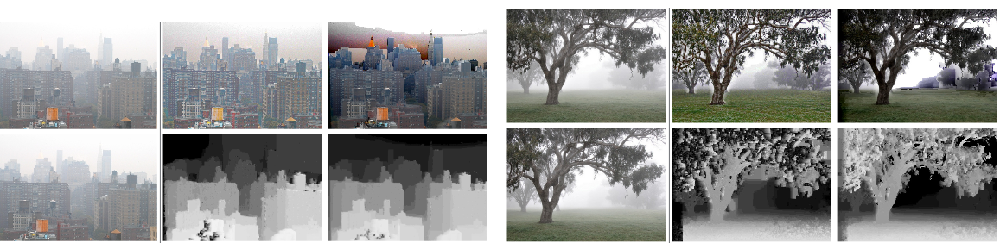

Abstract
Fog reduces contrast and thus the visibility of vehicles and obstacles for drivers. Each year, this causes traffic accidents. Fog is caused by a high concentration of very fine water droplets in the air. When light hits these droplets, it is scattered and this results in a dense white background, called the atmospheric veil. As pointed in, Advanced Driver Assistance Systems (ADAS) based on the display of defogged images from a camera may help the driver by improving objects visibility in the image and thus may leads to a decrease of fatality and injury rates. In the last few years, the problem of single image defogging has attracted attention in the image processing community. Being an ill-posed problem, several methods have been proposed. However, a few among of these methods are dedicated to the processing of road images. One of the first exception is the method in , where a planar constraint is introduced to improve the restoration of the road area, assuming an approximately flat road. The single image defogging problem being ill-posed, the choice of the Bayesian approach seems adequate to set this problem as an inference problem. A first Markov Random Field (MRF) approach of the problem has been proposed recently in. However, this method is not dedicated to road images. In this paper, we propose a novel MRF model of the single image defogging problem which applies to all kinds of images but can also easily be refined to obtain better results on road images using the planar constraint. A comparative study and quantitative evaluation with several state-of-the-art algorithms is presented. This evaluation demonstrates that the proposed MRF model allows to derive a new algorithm which produces better quality results, in particular in case of a noisy input image.
Bibtex
@inproceedings{
jpt-accv12, author = {Caraffa, L. and Tarel, J.-P.},
title = {Stereo Reconstruction and Contrast Restoration in Daytime Fog},
booktitle = {Proceedings of Asian Conference on Computer Vision (ACCV'12)},
address = {Daejeon, Korea}, volume = {IV}, pages = {13-25},
publisher = {Springer},
series = {LNCS},
number = {7727},
year = {2013},
note = {http://perso.lcpc.fr/tarel.jean-philippe/publis/accv12.html} }